GNOME 3.6
Enlarge your GNOME
Open Source Workshop
CC : BY-NC-SA
- Mart van de Ven / m@type.hkUser interface paradigms
Desktops
Canvases
Spaces
... and the Mother of
ALL metaphoric divides
Gnome Shell

- How does it fit in?
- How can you unfit it?
User interface paradigms
- Traditional Desktop Metaphor
- 2D Canvases
- 3D Physical Spaces
- App-Centric WIMPs
Traditional Desktop Metaphor
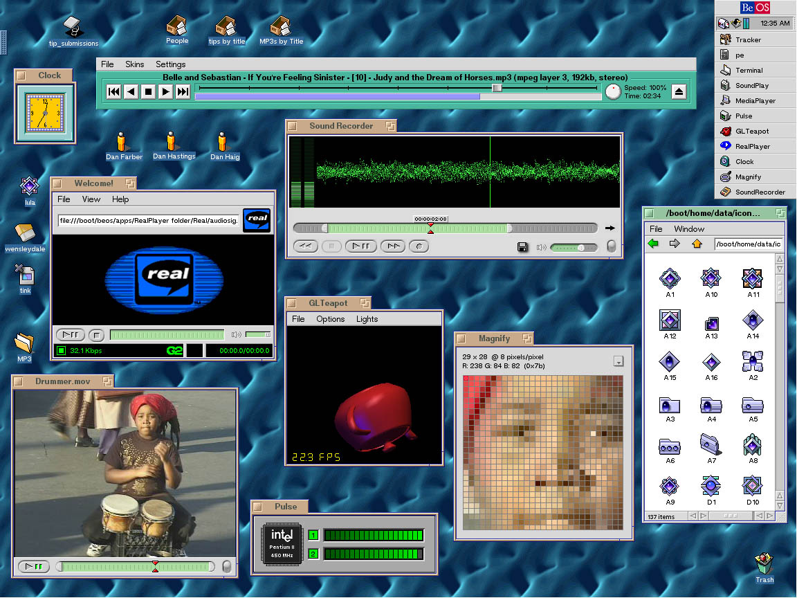BeOS 5.0 Desktop
source: birdhouse.org2D Canvases
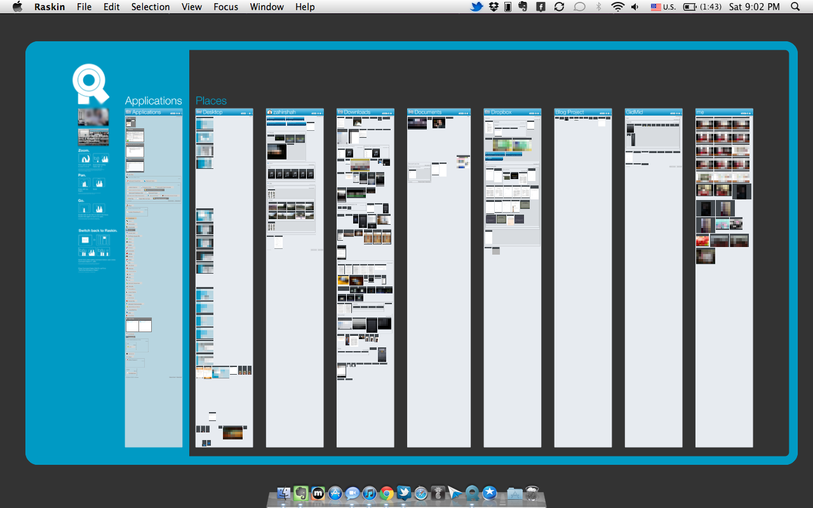Raskin ZUI (Zoomable User Interface)
~ gggadgets.com3D Physical Spaces
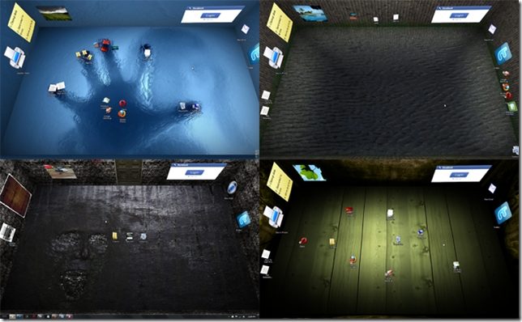BumpTop (3D desktop)
~ hotogeek.comApp-centric WIMPs
App-centric WIMPs still rely on the "windows, icons, menus, pointer"
style of interaction, however:
- Apps first class citizens
- Full-screen utilty
- Digitally native
- Powerful search-based launchers
Gnome Shell
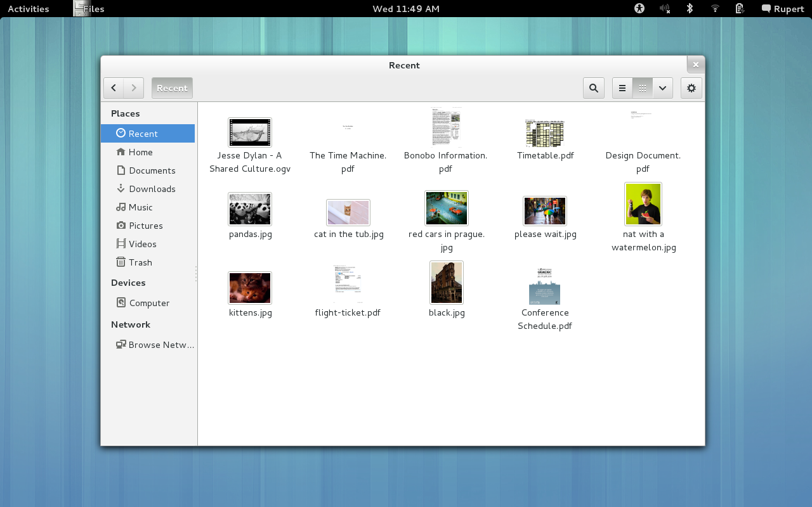Windows & Reduced menus
Gnome Shell
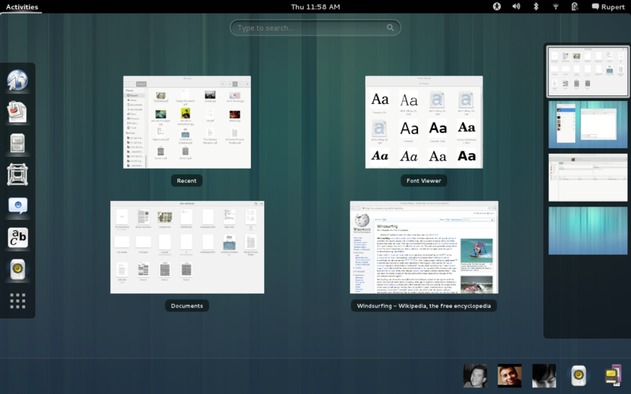Activities
Gnome Shell
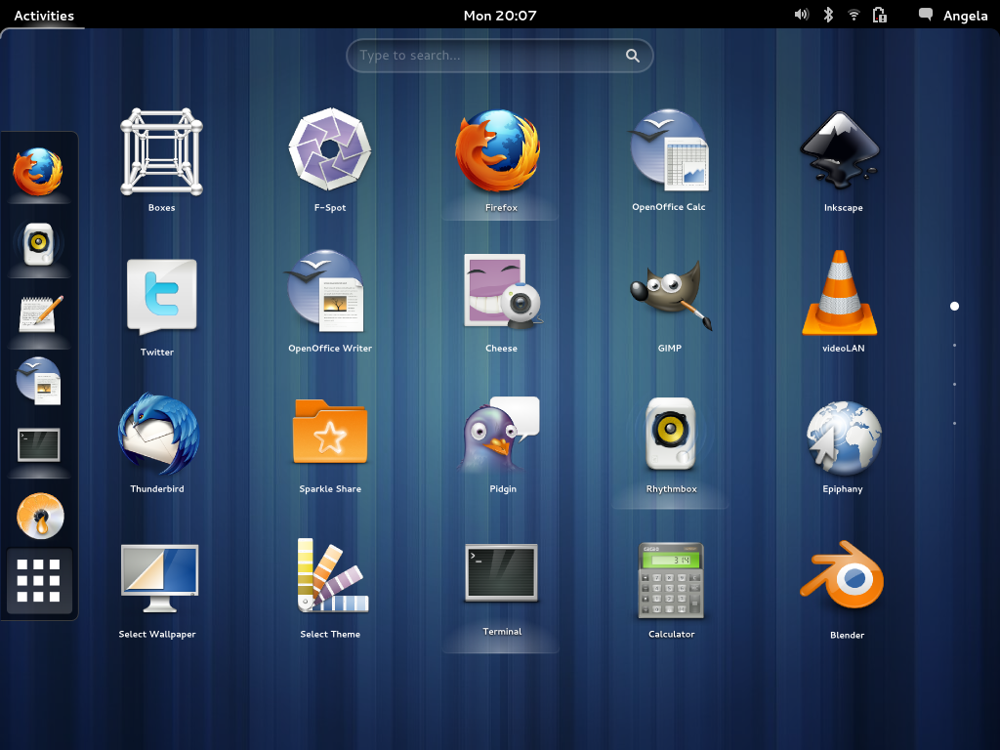App picker
GNOME Shells' Critics
- Dumbs down features and functionality
- Strips out configurability
- Kills productivity
- Change just ain't the same :(
Idealism vs Realism
Mother of all metaphoric divides
IDEALISM | | REALISM
Search |------------------------------------| Browse
Keyboard |------------------------------------| Pointer
Minimalism |------------------------------------| Exposed
Digital Native |------------------------------------| Skeuomorphic
GNOME SHell
How does it fit in?
IDEALISM | | REALISM
Search |-----|======|-----------------------| Browse
Keyboard |------|=========|-------------------| Pointer
Minimalism |---|====|---------------------------| Exposed
Digital Native |--|===|-----------------------------| Skeuomorphic
And how to unfit it?
GNOME Tweak Tool
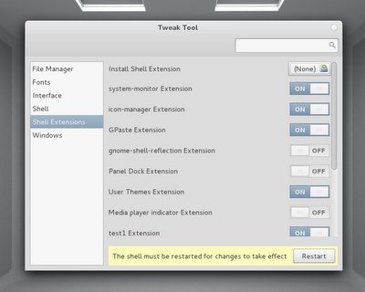cd && git clone git://git.gnome.org/gnome-tweak-tool
Available in most distro repos or directly from GNOME.org
~ webupd8.orgUndo: Dumbing down & no configurability
GNOME Shell Extensions
The GNOME Shell extension design is designed to give a high degree of power to the arts of the GNOME interface managed by the shell, such as window management and application launching. It simply loads arbitrary JavaScript and CSS.~ gnome.org
Get Extensions
Extensions are hosted on Gnome.orgInstallation of extensions
Extension preferences
Remember these?
IDEALISM | | REALISM
Search |-----|======|-----------------------| Browse
Keyboard |------|=========|-------------------| Pointer
Minimalism |---|====|---------------------------| Exposed
Digital Native |--|===|-----------------------------| Skeuomorphic
How would you like this balance tweaked?
Search
Search Providers
Queries consult the search provider and provides results in your overview.
- Window Search Provide
- VirtualBox Vm Search Provider
- SSH Search Provider
Browse
GNOME Activity Journal
Journal uses the Zeitgeist framework to classify files according to metadata.
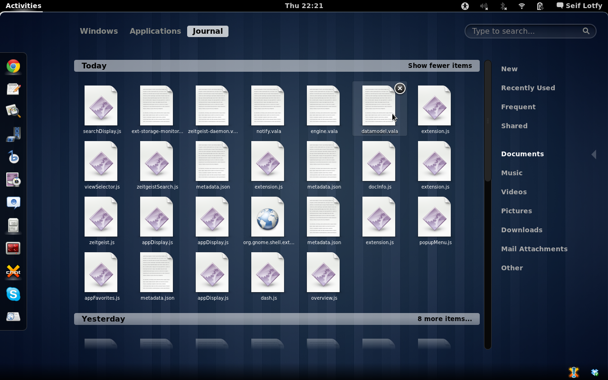Browse applications
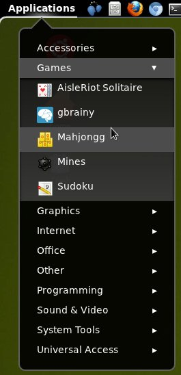Keyboard
Helpful keybindings
Adds a few keyboard shortcuts for various UI elements on the shell.
Keyboard Shortcuts
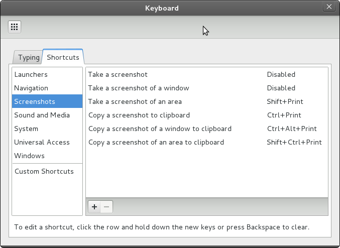WindowNavigator
Allow keyboard selection of windows and workspaces in overlay mode
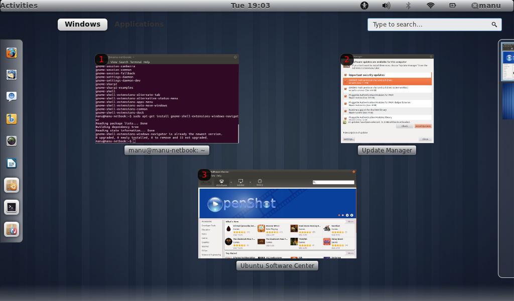Pointer
Gnome Tweak Tool > Fonts Size 120%
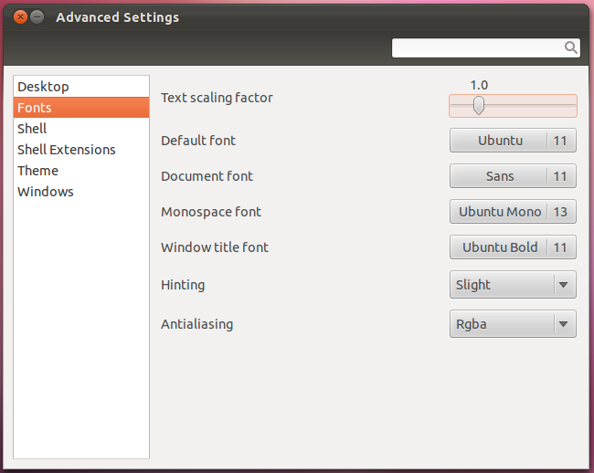Minimalism
The act of creation is an exercise in constraint. Many UI elements are removable by adding extensions.
Oh my, paradox!
- Remove Activities Button.
- Remove Rounded Corners
- Remove Contacts Search Provider
Exposed
Quick launch
Favourites Panel Extension
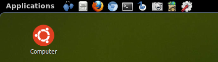Extended Jumplists
Powered by ZeitGeist engine
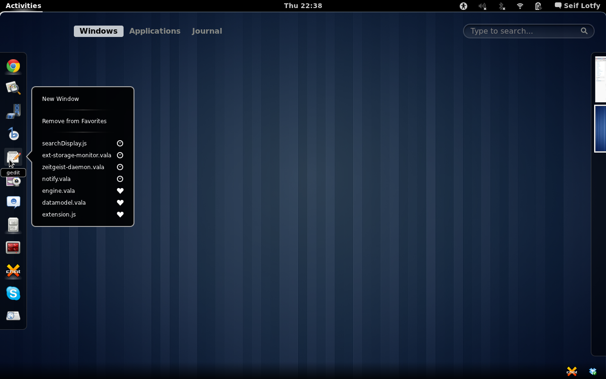Always-visisble Dock
Represents all opened windows as Icons in a panel.
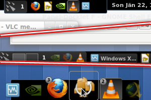Digital Native
Pretty much fully digitally native already. Hurray!
Skeuomorphic
A derivative object that retains ornamental design cues to a structure that was necessary in the original, even when not functionally necessary.
~ medialoot.com
User Themes
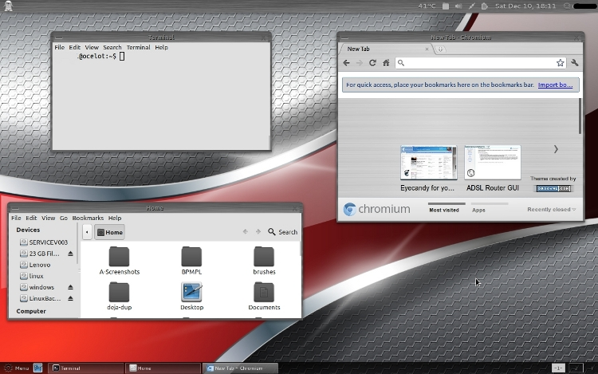Undo: Productivity Killed
Auto Move Windows
Move applications to specific workspaces when they create windows
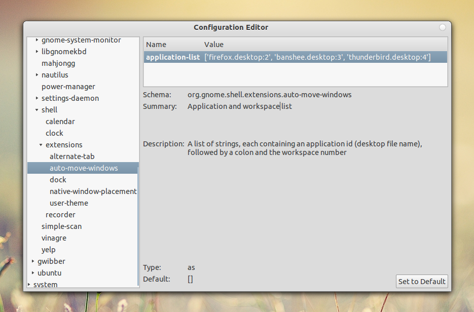gTile
Tile your windows as you like. It even supports multiscreen!